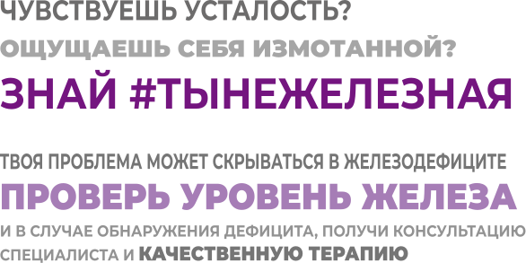

Постоянная усталость
Узнай, какие симптомы могут указывать на дефицит железа
Симптомы железодефицита
Выберай из списка и узнай больше:

Пройди онлайн диагностику дефицита железа

Экспресс-диагностика
дефицита железа
дефицита железа
#ТЫНЕЖЕЛЕЗНАЯ
Список литературы
- Fatigue of Anemia, Nutrition Reviews, Vol. 59, No. 1 January 2001
- Willis wr, Gohi1 K, Brooks GA, Dallman PR. Iron deficiency: improved exercise performance within 15 hours of iron treatment in rats. J Nutr 1990;120 909-1 6
- Andrews NC. Disorders of iron metabolism. N Engl J Med 1999;341: 1986-95
- A new missense mutation in the L ferritin coding sequence associated with elevated levels of glycosylated ferritin in serum and absence of iron overload. Kannengiesser C, Jouanolle AM, Hetet G, Mosser A, Muzeau F, Henry D, Bardou-Jacquet E, Mornet M, Brissot P, Deugnier Y, Grandchamp B, Beaumont C Haematologica. 2009;94(3):335.
- Soppi E. T. (2018). Iron deficiency without anemia - a clinical challenge. Clinical case reports, 6(6), 1082–1086.
- The relationship between depression and serum ferritin level Shariatpanaahi,Z Vahdat Shariatpanaahi, M Moshtaaghi, S H Shahbaazi & A Abadi European Journal of Clinical Nutrition volume 61, pages 532–535 (2007)
- Association between psychiatric disorders and iron deficiency anemia among children and adolescents: a nationwide population-based study Mu-Hong Chen, Tung-Ping Su, Ying-Sheue Chen,Ju-Wei Hsu,Kai-Lin Huang, Wen-Han Chang,Tzeng-Ji Chen and Ya-Mei Bai BMC Psychiatry. 2013; 13: 161
- Serum ferritin and vitamin d in female hair loss: do they play a role H Rasheed 1, D Mahgoub, R Hegazy, M El-Komy, R Abdel Hay, M A Hamid, E Hamdy Skin Pharmacol Physiol 2013;26(2):101-7
- Iron status in diffuse telogen hair loss among women M Vahdat Shariatpanaahi, Z Vahdat Shariatpanaahi, M Moshtaaghi, S H Shahbaazi A Abadi European Journal of Clinical Nutrition 61, pages 532–535 (2007)
- Iron Plays a Certain Role in Patterned Hair Loss Song Youn Park,Se Young Na, Jun Hwan Kim, Soyun Cho, and Jong Hee Lee J Korean Med Sci. 2013 Jun; 28(6): 934–938..
- Plasma ferritin determination as a diagnostic tool.Finch CA, Bellotti V, Stray S, Lipschitz DA, Cook JD, Pippard MJ, Huebers HA West J Med. 1986;145(5):657.
- Bda.uk.com.2021.Iron.:https://www.bda.uk.com/resource/iron-rich-foods-iron- deficiency.ht
- Effect of iron supplementation on fatigue in nonanemic menstruating women with low ferritin: A randomized controlled trial. Paul Vaucher, DiO MSc, Pierre-Louis Druais, MD, Sophie Waldvogel, MD, and Bernard Favrat, MD 2012 Aug 7; 184(11): 1247–1254.].
- Investigation and management of a raised serum ferritin. Cullis JO, Fitzsimons EJ, Griffiths WJ, Tsochatzis E, Thomas DW, British Society for Haematology Br J Haematol. 2018;181(3):33
- How we diagnose and treat iron deficiency anemia. Auerbach M, Adamson Am J Hematol. 2016;91(1):31
Информация, содержащаяся на сайте, не заменяет консультацию врача
Имеются противопоказания. Проконсультируйтесь со специалистом